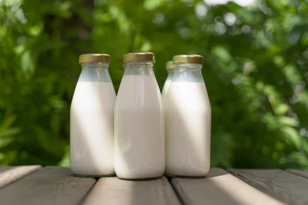

W naszym sklepie gospodarczym znajdziesz surowe mleko, jajka, ser, makaron i chleb, a także bardziej egzotyczne produkty jak olej konopny, stare odmiany zbóż, pomarańcze i cytryny.
Szczególnie dbamy o zrównoważoną uprawę. Wiemy o każdym produkcie, skąd pochodzi i jak jest wytwarzany. To czuć nawet w smaku!
Zobacz sklep
Świeże, nieprzetworzone mleko prosto od naszych krów — dostępne w automacie całą dobę.
Wiemy o każdym produkcie, skąd pochodzi. Własne uprawy, bez kompromisów w kwestii jakości.
Jesteśmy otwarci 7 dni w tygodniu. Sklep codziennie 8–20, automat do mleka całą dobę.
Jak dojechać